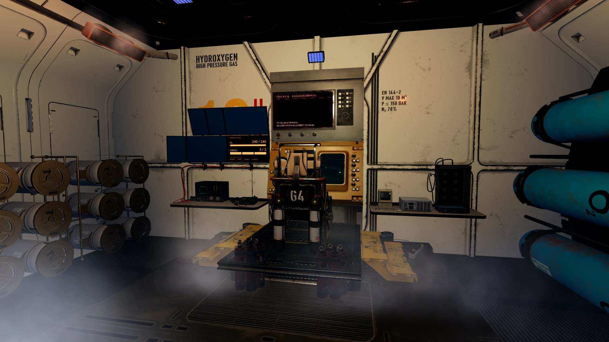
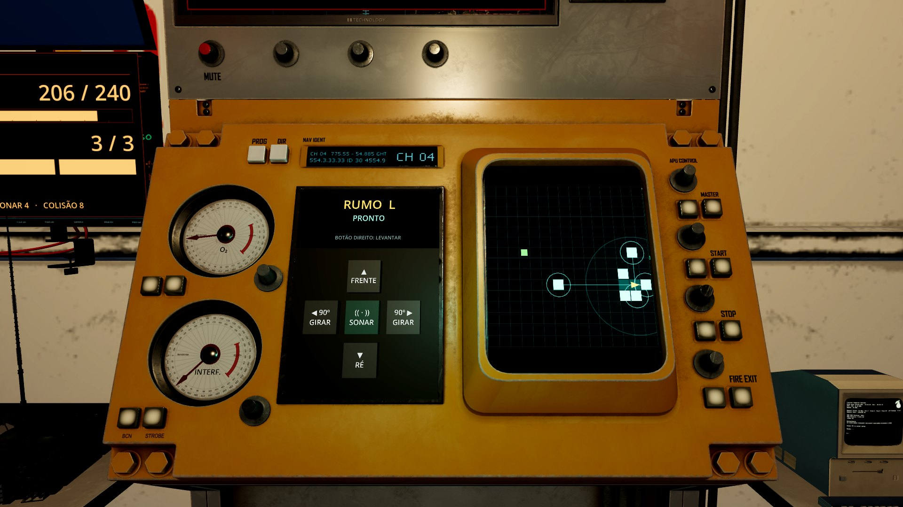
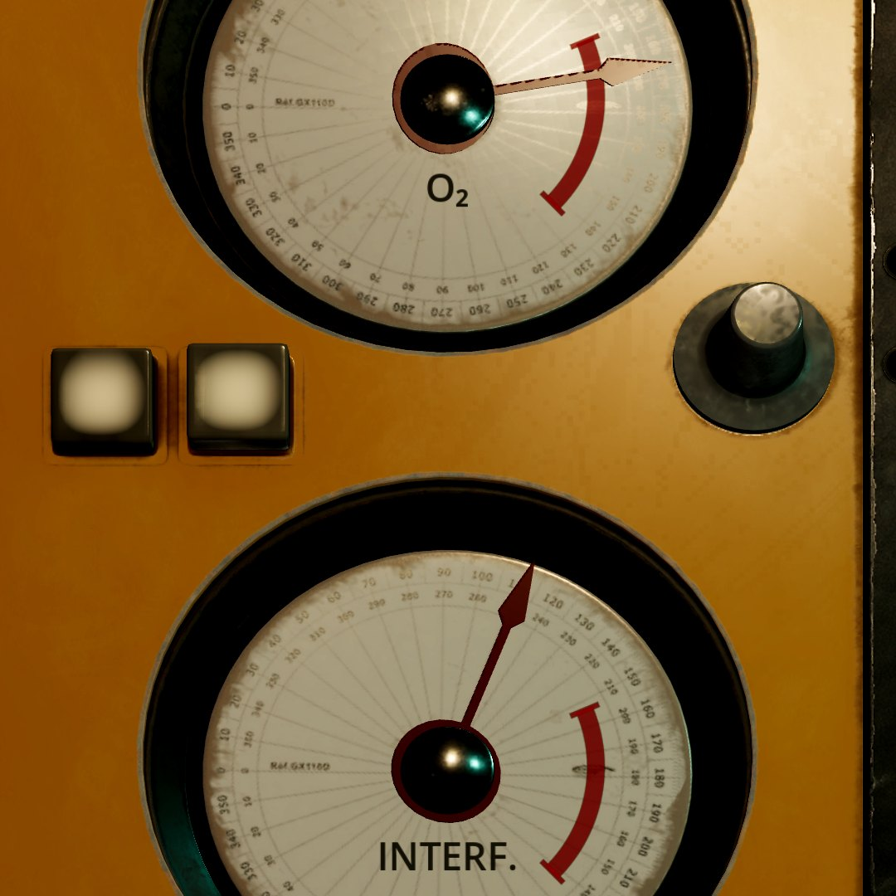
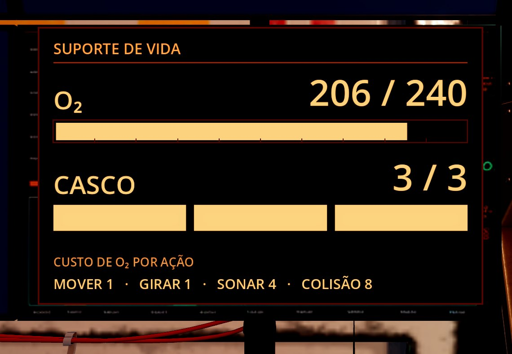
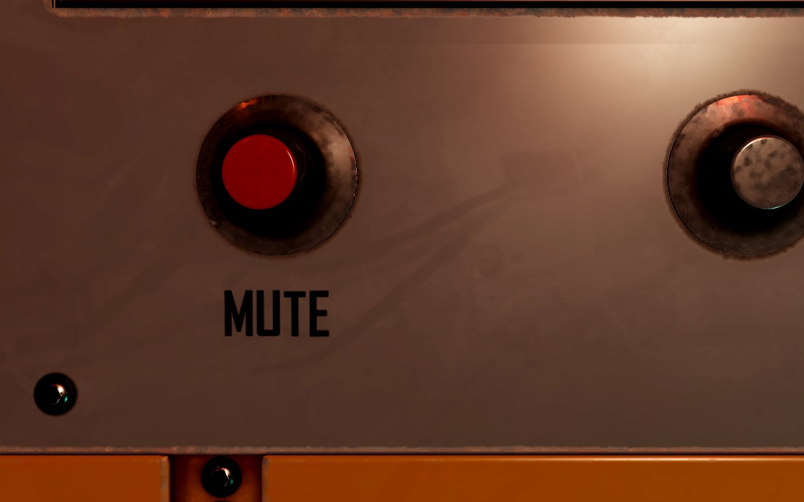
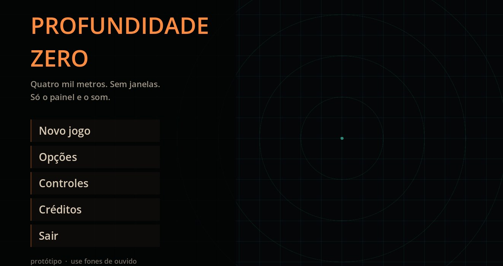
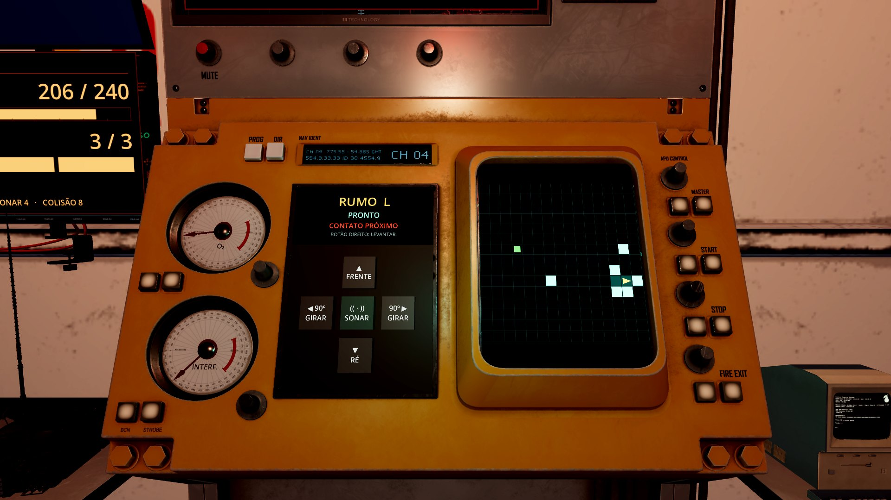
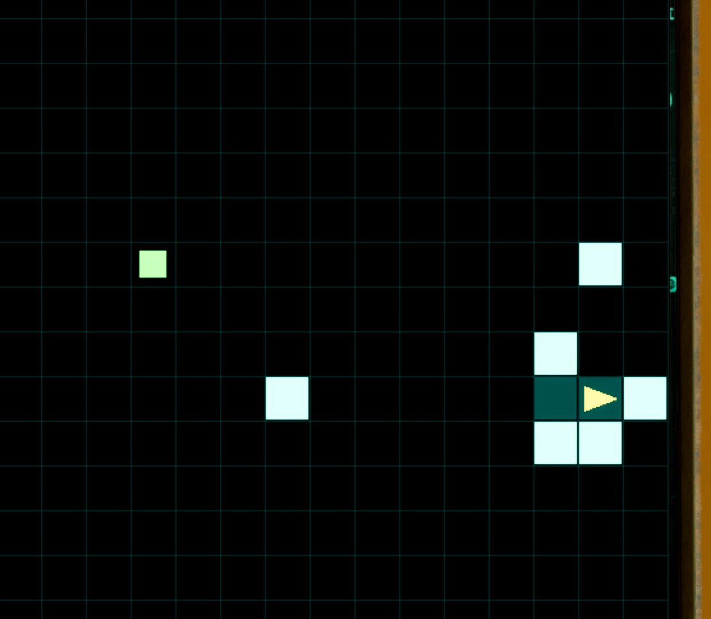

| Versão | Data | Alterações |
|---|---|---|
| 0.1 | 15/09/2026 | Conceito, pitch, core loop e escopo do MVP. |
| 0.2 | 06/10/2026 | Oxigênio e fim de partida; cabine em primeira pessoa; rádio do comandante; alarme com sirene e luz. |
| 0.3 | 28/10/2026 | Labirinto procedural, sonar, criatura em turnos e derrota por contato. |
| 0.4 | 12/11/2026 | Painel diegético com teclas físicas, manobras com duração, lore definida e primeiro rebalanceamento da criatura (casco, ronda, mergulho). |
| 0.5 | 16/11/2026 | Segunda rodada de balanceamento, monitor de suporte de vida, falas 14–19, menus, cenas de fim e telemetria de playtest. |
| 0.6 | 18/11/2026 | Instrumentos originais do painel, percurso do labirinto controlado (28–32 passos), escopo da entrega e roadmap. |
| 1.0 | 19/11/2026 | Versão de entrega. |
Profundidade Zero é um jogo de horror em primeira pessoa no qual o jogador pilota uma cápsula sem janelas a quatro mil metros de profundidade. Para voltar à superfície, precisa atravessar um labirinto de galerias de rocha guiando-se só por um painel de instrumentos, por um sonar que pode denunciá-lo e pela voz de um comandante que esconde alguma coisa.
| Gênero | Horror psicológico · navegação às cegas · gestão de recursos |
| Perspectiva | Primeira pessoa, sempre dentro da cabine |
| Jogadores | Um jogador |
| Plataforma | PC (Windows e Linux), mouse e teclado |
| Engine | Godot 4 (renderizador Compatibility) |
| Público | 14+ — tensão e perigo implícito, sem violência gráfica |
| Duração da partida | 3 a 6 minutos; cada tentativa gera um labirinto novo |
Toda decisão de design passa por quatro pilares. Quando uma ideia contraria um deles, ela muda ou sai.
O exterior nunca é mostrado. Tudo o que o jogador sabe sobre o lado de fora chega por som e por instrumentos: eco do sonar, impacto no casco, estática do rádio.
Ver custa caro. Cada pulso de sonar gasta ar e pode chamar a criatura, e cada passo às cegas arrisca uma batida. A tensão nasce de escolher quando saber.
Não há HUD flutuante. Oxigênio, casco, mapa e alertas estão nos mostradores, telas e luzes do painel, e todo comando é um botão físico.
A criatura nunca aparece nem tem nome. A história chega pelos deslizes do comandante e por objetos da cabine, nunca por exposição.
| Jogo | O que aproveitamos |
|---|---|
| Iron Lung (D. Szymanski, 2022) | Câmera presa num veículo submerso sem visão direta; o horror vem do confinamento e do que os instrumentos sugerem. |
| Duskers (Misfits Attic, 2016) | Exploração mediada por sensores e recursos escassos; informação incompleta como regra. |
| Phasmophobia (Kinetic Games, 2020) | Pistas sonoras e ruído do equipamento como mecânica principal. |
| Dead Space (EA, 2008) | Interface diegética e a cabine que muda de cor e atmosfera no alarme. |
A fantasia é a de um piloto esquecido no fundo do mar, sozinho numa cápsula que range, tentando voltar para casa com o pouco que os instrumentos mostram.

| Sensação | Como o jogo a produz |
|---|---|
| Tensão constante | Privação sensorial: só sinais indiretos, manobras que demoram um segundo para revelar o resultado. |
| Vulnerabilidade | Ar contado, casco que aguenta dois golpes, uma ameaça que nunca é vista. |
| Alívio breve | Quando a criatura mergulha, o alarme apaga e a interferência cai, até o próximo pulso. |
| Desconfiança | O comandante soa profissional, mas escorrega: “De novo não”, “Ninguém chegou tão…”. |
O jogador acorda em pé na cabine. O rádio estala: a Superfície avisa que o cabo de reboque rompeu, que a cápsula está a quatro mil metros e que foi marcado um ponto de resgate no sonar. Andando pela cabine, ele encontra um caderno de bordo, uma escotilha com dez riscos gravados e um terminal com o registro de uma cápsula perdida.
Sentado no posto, aprende o painel pela voz do comandante: frente e ré andam uma seção, as setas giram, tudo gasta ar. O primeiro pulso de sonar desenha as paredes mais próximas no mapa. Ele avança, bate numa parede, ouve o casco protestar e entende que andar às cegas custa caro.
Num dos pulsos, um ponto vermelho aparece no mapa e some. O comandante hesita (“Não… De novo não.”) e, dali em diante, o mostrador de interferência passa a ser a coisa mais importante do painel. Quando ele sobe, usar o sonar significa chamá-la. O jogador aprende a pulsar e sair de onde pulsou.
Perto do ponto de resgate, o rádio ganha esperança. O cabo engata, a cabine dá um tranco e começa a subir. A última fala confirma o que o jogador já suspeitava: “você foi a primeira a voltar”.
Cada ciclo dura alguns segundos e se repete até a cápsula alcançar o ponto de resgate ou o jogador perder o ar ou o casco.
O jogador alterna entre dois modos. Em pé, anda pela cabine e examina objetos. Sentado no posto, opera o painel. Nos dois, uma pequena mira no centro da tela indica o que está sob o olhar, e o controle apontado acende.
| Modo | Entrada | Ação |
|---|---|---|
| Em pé | WASD / setas · mouse | Andar e olhar pela cabine |
| Em pé | Clique esquerdo | Examinar objeto · sentar no posto |
| Sentado | Mouse (olhar limitado) | Mirar as teclas e instrumentos do painel |
| Sentado | Clique esquerdo | Acionar a tecla ou o knob sob a mira |
| Sentado | Clique direito | Levantar |
| Qualquer | Esc | Pausa |
A cápsula se move numa grade, uma seção por vez, só na direção em que está apontada. Não há movimento livre nem deslocamento lateral. Cada comando é uma manobra com duração real: a tecla afunda, as outras travam, o motor ronca, e só no fim chega o resultado. A batida numa parede vem depois de quase um segundo de motor ligado, e é nesse intervalo que mora a antecipação.
| Tecla | Efeito | Oxigênio | Duração | Turno da criatura |
|---|---|---|---|---|
| ▲ Frente | Avança uma seção | 1 | 1,0 s | Sim |
| ▼ Ré | Recua uma seção, sem girar | 1 | 1,0 s | Sim |
| ◀ ▶ Girar 90º | Gira no lugar | 1 | 0,8 s | Não |
| (( · )) Sonar | Pulso nas quatro direções | 4 | 0,9 s | Sim |
| Colisão | Andar contra uma parede: a cápsula não se move | 8 | — | Sim |
Girar não dá turno à criatura. Girar é mirar, não se deslocar; quando dava turno, cada curva virava uma vantagem gratuita para ela e a fuga ficava injusta.
Cada pulso revela, nas quatro direções, o primeiro obstáculo atingido. Esse obstáculo fica registrado no mapa do CRT; o resto do corredor continua desconhecido. Um anel se expande na tela até o alcance de detecção. Se a criatura estiver a até 4,5 seções em linha reta, ou no caminho de um dos quatro feixes, ela aparece como um ponto vermelho passageiro.
O pulso também é barulho. Fora de 3 seções, a criatura vai até o ponto de onde o pulso saiu. A 3 seções ou menos, ela vem direto na cápsula e ataca sem hesitar. Ver onde ela está, portanto, pode custar o casco.
O oxigênio é o recurso central: 240 unidades, sem regeneração, gastas por toda manobra. Com 25% ou menos, um bipe de alarme dispara. O casco tem 3 pontos de integridade. Cada golpe da criatura tira um, e o terceiro rompe o casco.
| Resultado | Condição | Desfecho |
|---|---|---|
| Resgate | Chegar ao ponto de resgate, mesmo com o último ponto de ar | O cabo engata, a cabine é puxada e sobe até um clarão quente. |
| Falta de ar | Oxigênio chega a zero | O suporte de vida desliga, a visão escurece e pulsa como um batimento cada vez mais lento. |
| Contato | Terceiro golpe no casco | Dois golpes violentos, luzes e telas enlouquecem, apagão. O rádio fala no escuro. |
Cada desfecho termina com uma fala do comandante, e só depois aparece a tela de fim com “Tentar novamente” e “Menu principal”.
A ameaça nunca é vista. Ela age em turnos, logo depois de cada manobra que desloca a cápsula ou faz barulho, e reage ao som. O jogador só a conhece pelo que ela provoca nos instrumentos.
Nos primeiros 15 turnos ela dorme, e nasce a pelo menos 14 seções da cápsula. Esse período de calma permite aprender o painel sem pressão. Depois, alterna entre cinco estados.
| Estado | O que ela faz | Como o jogador percebe |
|---|---|---|
| Vagando | Anda sem rumo, uma seção a cada dois turnos. | Interferência baixa ou nula. |
| Caçando | Ouviu um pulso de longe e segue o menor caminho até a seção de onde ele saiu, uma por turno. Não segue a cápsula. | Um chamado distante responde ao pulso se ela estiver a até 10 seções. |
| Rondando | Sentiu a cápsula a 2 seções ou menos. Aproxima-se devagar. Encostada, a cada turno ataca (30%) ou hesita; a primeira encostada da partida sempre hesita. Perde o rastro se a cápsula se afastar mais de 4 seções. | Interferência alta, metal rangendo, sirene e luz vermelha. |
| Em carga | Um pulso a 3 seções ou menos a faz vir direto. Ataca ao encostar, sem hesitar. | Interferência dispara; o comandante grita na primeira vez. |
| Mergulho | Depois de um golpe, ou de chegar a um ponto de pulso vazio, some por 4 turnos e reaparece a 10 seções ou mais. | Alarme apaga, interferência cai: alívio. |
Como a criatura caça o ponto do pulso, e não a cápsula, um jogador atento descobre que pode pulsar e sair dali: ela chega ao ponto vazio e mergulha. Essa estratégia de “isca” surgiu da combinação das regras, sem ter sido programada como recurso, e apareceu espontaneamente nos testes. O design a mantém porque recompensa entender o sistema.
A Superfície, centro de operações de uma empresa de pesquisa oceânica, desceu a Cápsula Dez a quatro mil metros, numa descida que deveria ser de rotina até a Estação Tétis, uma base de pesquisa no fundo de um sistema de galerias de rocha. O cabo de reboque rompeu. Sem janelas e sem câmeras, o piloto precisa levar a cápsula pelas galerias até um ponto onde a Superfície consegue engatar outro cabo.
Nada é explicado de forma direta. A verdade aparece em três canais, e o jogador monta a história sozinho.
| Camada | Exemplos |
|---|---|
| Deslizes no rádio | “Mas lá embaixo… o pulso viaja longe.” · “Não… De novo não.” · “Ninguém chegou tão… vocês estão perto.” · “Elas sempre recuam depois do primeiro…” |
| Objetos da cabine | Canal da Tétis riscado no rádio · registro corrompido da C-09 no terminal · dez riscos gravados na escotilha · reguladores “reaproveitados da C-07” |
| Desfecho | Resgate: “você foi a primeira a voltar”. Derrota: “Registre. Cápsula Dez, sinal perdido. Preparem a Onze.” |
Nenhuma exposição longa: cada revelação cabe numa frase ou num objeto. O que é a criatura e o que houve com a Tétis ficam sem resposta, de propósito.
Cada partida acontece num labirinto novo, gerado no início. O formato muda sempre; o tamanho do percurso, não.
Na primeira versão do gerador, a saída só precisava estar longe o bastante (um quarto das seções livres). O resultado era uma cauda longa: a maioria dos mapas tinha percurso de 25 a 31 passos, mas 15% passavam de 40, e alguns chegavam a 74. Nos testes, as derrotas por falta de ar aconteceram justamente nos mapas mais longos. A dificuldade dependia de sorte.
A faixa de 28 a 32 passos fica em torno da mediana antiga (30). Ela remove as duas pontas, mapas fáceis demais e mapas quase impossíveis, sem mudar a dificuldade típica. Os dados estão no capítulo 10.
Não há HUD. Tudo o que o jogador precisa saber está no painel físico à frente da cadeira, e todo comando é uma tecla ou um knob que afunda ao ser pressionado.

1 2 3 4 5 6 7| # | Instrumento | Função |
|---|---|---|
| 1 | Knob MUTE | Silencia a sirene e o bipe; a luz vermelha continua. Acende em âmbar enquanto silenciado. Um perigo novo rearma o som. |
| 2 | Suporte de vida | Monitor lateral: oxigênio em número e barra, casco em três blocos e o custo de cada ação. |
| 3 | Relógio de O₂ | Ponteiro parte da esquerda (cheio) e entra na faixa vermelha nos últimos 25%. |
| 4 | Relógio de interferência | Sobe e treme conforme a criatura se aproxima. Faixa vermelha = não use o sonar. |
| 5 | Tela de rumo | Rumo atual, estado da manobra (PRONTO, AVANÇANDO…) e alertas piscando. |
| 6 | Teclado em cruz | Frente, ré, giros e sonar. A disposição espelha a ação, o que reduz erros sob tensão. |
| 7 | CRT do sonar | Mapa: paredes reveladas, rastro, posição e rumo, saída em verde e o eco vermelho da criatura. |
Acima do painel, o monitor de registro lista em fonte grande cada evento da navegação (deslocamentos, impactos, pulsos e golpes).



Os menus ficam fora da ficção, mas usam o visual dos monitores da cabine: fundo escuro, âmbar e ferrugem. Toda troca de tela passa por um fade para preto. O menu principal tem uma tela de sonar ao fundo, com um pulso a cada cinco segundos, e recomenda fones de ouvido.

Opções (salvas entre sessões): volume geral, voz do rádio, efeitos e ambiente; sensibilidade do mouse; legendas do rádio; tela cheia. A pausa congela a partida e oferece continuar, opções, controles, reiniciar, menu e sair. Os controles resumem andar e operar o posto; o resto, a Superfície explica pelo rádio.
Uma cabine industrial, apertada e mal iluminada, onde as telas são as fontes de luz mais confiáveis.

A cabine foi montada pela equipe na Unreal Engine com o pacote de ambientação Deep Water Station e reexportada peça por peça para a Godot. O painel do posto veio em alta resolução (texturas de 4096 px) para que os instrumentos sejam legíveis de perto.
Os relógios, o knob do alarme e os rótulos usam as peças originais do pacote, adaptados às funções do jogo: o ponteiro modelado gira, o knob foi pintado de vermelho e a placa recebeu o rótulo MUTE com as letras dos rótulos originais.
As telas do painel são interfaces 2D renderizadas sobre a malha, o que permite atualizá-las em tempo real sem perder a nitidez.

Num jogo sem visão do exterior, o som é o sentido principal. Ele informa, ensina e assusta, e por isso nenhuma camada pode mascarar as outras por muito tempo.
Toda a informação inicial chega pela voz da Superfície, numa transmissão realista: voz comprimida, chiado, cortes. A introdução é curta. O resto do tutorial vem em falas disparadas na primeira vez que algo acontece (primeira colisão, primeiro pulso, oxigênio baixo), porque uma instrução que chega no momento do evento ensina melhor do que uma lista no começo.
| Som | Quando |
|---|---|
| Ambiente submarino | Sempre: pressão, correntes, bolhas |
| Motor | Ao andar; mais grave na ré, corta seco no impacto |
| Rangido do casco | Ao girar |
| Impacto metálico | Colisão com parede |
| Ping e eco do sonar | A cada pulso; rosnado quando o eco passa pela criatura |
| Chamado distante | Resposta a um pulso que ela ouviu, a até 10 seções |
| Metal rangendo | Criatura a 4 seções ou menos, mais alto quanto mais perto |
| Ronco grave de tensão | Cresce com a proximidade da criatura |
| Sirene / bipe duplo | Perigo de contato / oxigênio baixo: sons diferentes para causas diferentes |
| Clique mecânico | Cada tecla e knob do painel |
A sirene pode ser silenciada pelo knob MUTE, mas a luz continua piscando. É uma escolha de risco: recuperar a audição, que o jogo exige, sem perder o aviso.
Meta: 40% a 60% de vitórias a partir da terceira ou quarta partida. Cada resgate deve ser conquistado, e nenhuma derrota deve parecer injusta.
| Parâmetro | Valor | Observação |
|---|---|---|
| Oxigênio inicial | 240 | Sem regeneração |
| Custo: andar / girar / sonar / colisão | 1 / 1 / 4 / 8 | Bater dói como oito passos |
| Alarme de oxigênio | 25% | Mesmo limiar da faixa vermelha |
| Casco | 3 | O 3º golpe é a derrota |
| Período de calma | 15 turnos | Criatura nasce a ≥ 14 seções |
| Detecção do sonar | 4,5 seções | Linha reta, atravessa paredes |
| Carga garantida | ≤ 3 seções | Pulso perto dela |
| Chance de ataque encostada | 30% | Primeira encostada sempre hesita |
| Mergulho | 4 turnos | Reaparece a ≥ 10 seções |
| Percurso até o resgate | 28–32 passos | Labirinto 15 × 15 |
Cada partida grava um resumo e um registro passo a passo (ações, reação da criatura, oxigênio, casco e distâncias). Um relatório agrega as partidas e aponta taxa de vitória, causa das derrotas e o que separa vitórias de derrotas. Os ajustes vieram em rodadas: um pacote grande até o jogo ficar fácil e, depois, recuo gradual até a meta. Todas as partidas registradas foram jogadas pela equipe; testes com jogadores de fora estão previstos antes da demonstração aberta.
Com o percurso controlado, as derrotas deixaram de depender do mapa: o jogador terminou a 24–61 passos da saída, por ter seguido a rota errada, e usou 26 a 29 pulsos de sonar, contra 12 a 18 nas vitórias. O sonar é o que mais pesa, como o design pretende, e o oxigênio foi mantido em 240.
Funcionalidades planejadas para depois desta versão. Nenhuma delas está implementada; todas partem de sistemas que já existem.
| Funcionalidade | Descrição | Por que encaixa |
|---|---|---|
| Modos de dificuldade | Dois perfis, fácil e difícil, com os parâmetros da tabela 10.1. No difícil, uma regra nova: a criatura não mergulha ao chegar a um ponto de pulso vazio e fica rondando a área. | O fácil acolhe quem joga pela primeira vez; o difícil desafia a estratégia da isca. |
| Powerups | Destroços das cápsulas anteriores, visíveis só no feixe do sonar: cilindro de oxigênio (+30), placa de casco (+1) e boia-isca, que solta um pulso falso para atrair a criatura. Três a quatro por mapa, em becos. | Dão ao sonar um segundo motivo e transformam becos em escolha de risco. Cada coleta lembra quem morreu ali. |
| Modo Roguelike | Mapas em sequência, com dificuldade crescente. Cada nova tentativa depois de uma derrota vira a “Cápsula Onze”, “Doze”… | A fala de derrota já termina em “Preparem a Onze”. |
| Progressão entre tentativas | Melhorias permanentes conquistadas no modo roguelike. | Recompensa tentativas repetidas sem mudar o núcleo do jogo. |
Falas da Superfície para a Cápsula Dez. Cada uma toca no máximo uma vez por partida. Reticências marcam pausas e hesitações na gravação.
| # | Quando toca | Fala |
|---|
| Superfície | Centro de operações que comanda a descida; também o nome do comandante no rádio. |
| Cápsula Dez | A cápsula do jogador, a décima a descer. |
| Estação Tétis | Base de pesquisa no fundo das galerias, sem contato antes da primeira descida. |
| Seção | Uma casa da grade do labirinto; a cápsula anda uma seção por manobra. |
| Manobra | Um comando do painel (andar, ré, girar, sonar), com duração e custo de oxigênio. |
| Turno | A vez da criatura agir, logo após uma manobra que desloca a cápsula ou faz barulho. |
| Pulso | Um uso do sonar. |
| Eco | O retorno do pulso: a parede mais próxima em cada direção ou o ponto vermelho da criatura. |
| Interferência | Medida de proximidade da criatura, mostrada no relógio e na estática do rádio. |
| Ponto de resgate | A saída do labirinto, marcada em verde no sonar, onde a Superfície engata o novo cabo. |
| Percurso | O menor caminho, em passos, da partida até o ponto de resgate. |